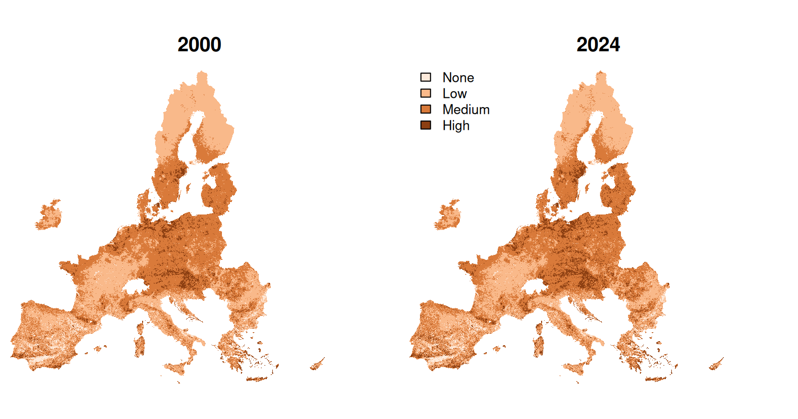
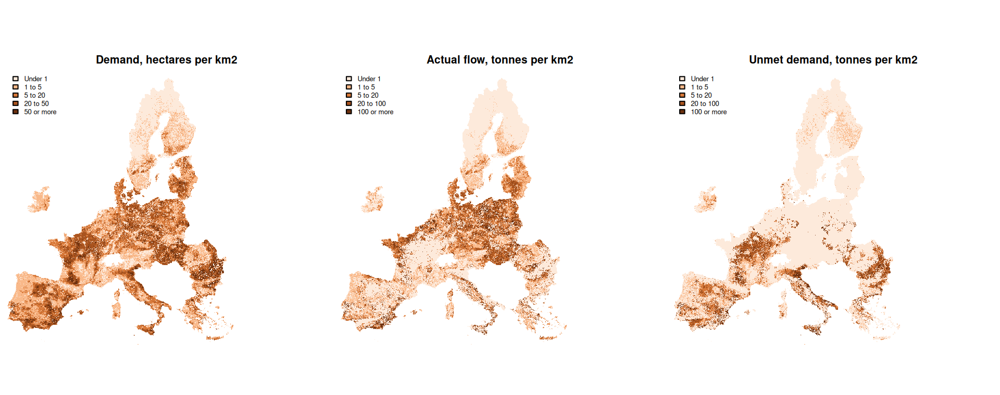
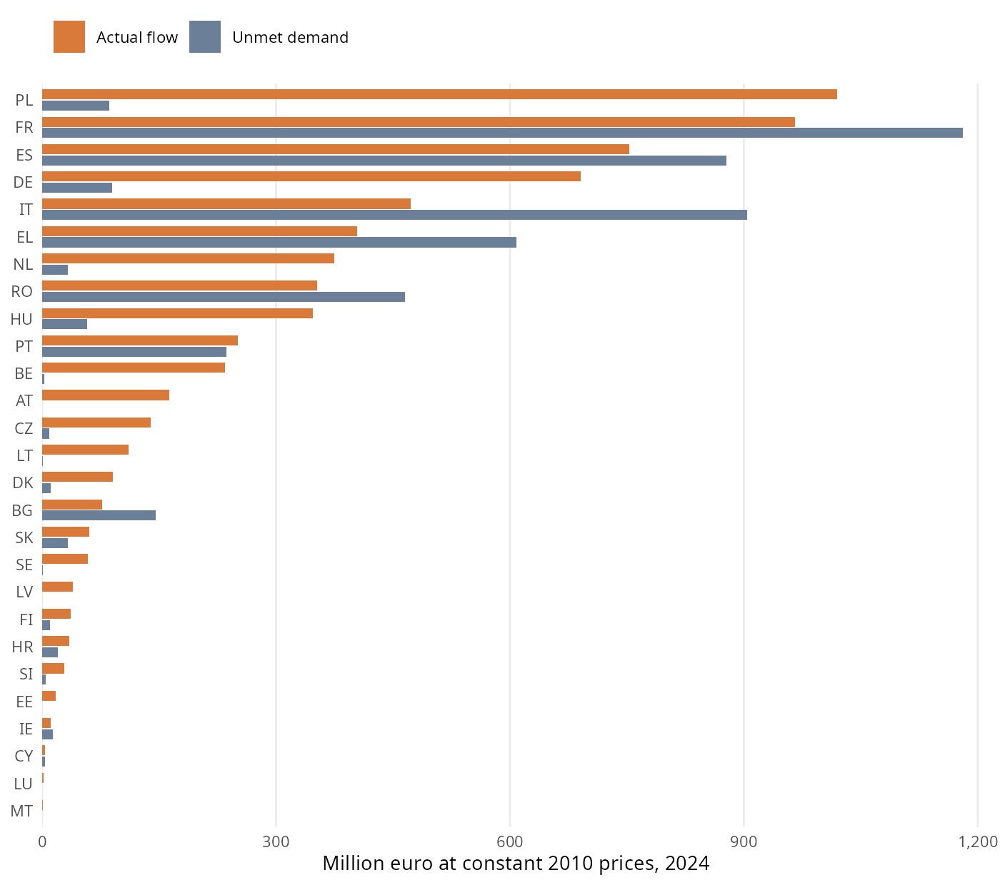

Year | Correlation | Mean, rebuilt | Mean, catalogue | Largest gap | Service area, rebuilt (Mha) | Service area, catalogue (Mha) | Class differs (%) |
|---|---|---|---|---|---|---|---|
2000 | 0.985 | 0.209 | 0.209 | 0.298 | 228.994 | 229.043 | 2.235 |
2018 | 0.978 | 0.213 | 0.214 | 0.310 | 237.565 | 240.479 | 3.619 |
Crop Pollination Ecosystem Service Accounts
European Union, 2000 to 2024 series update: processing methods and results
Summary
We provide estimates of the crop pollination ecosystem service for the 27 Member States of the European Union in 2000, 2006, 2012, 2018 and 2024, following the accounting method of Vallecillo et al. (2018). In 2024, crops that depend on insect pollination cover 17.6 million hectares, and 53 percent of that area lies where the environment can support wild pollinators. The production attributable to the service is 14.4 million tonnes, against 12.1 million tonnes in 2000, and another 9.9 million tonnes depend on pollination but grow outside that area. At constant 2010 prices, the actual flow is worth 6.7 billion euro and the unmet demand 4.8 billion euro. Spatial crop data end in 2018, so the crop pattern of 2018 stands in for 2024.
1 Introduction
Crop pollination is the fertilisation of crops by wild insects, which maintains or increases crop production. Ecosystem accounting treats it as a service that ecosystems supply and farmers use. It therefore needs a measure of what the environment can supply, a measure of where crops need it, and an estimate of what results when the two overlap (Vallecillo et al., 2018).
This report describes how we estimated those three quantities and valued the result, why we took each decision along the way and what the estimates show. The calculations are carried out by a series of scripts in the folder https://github.com/renatovargas/jrc-pollination/tree/main/scripts, listed in Table 1 in the order in which they run. Each step of the Methods section points to the entry of its script in Annex I, which explains what the script does and links to its code. The file run_all.R runs the whole series or any of its stages, and any single script can run again when only one input changes. The tables and the 100 m maps can be retrieved from the Downloads page of this site.
| Script | Purpose |
|---|---|
| 01_prepare_nuts.R | Regional boundaries and a 1 km grid of regions |
| 02_download_clc.R | Land cover at 100 m |
| 03_prepare_catalogue.R | Insect activity index and bumblebee model at 1 km |
| 04_prepare_capri.R | Crop area and yield at 1 km |
| 05_prepare_roads.R | Major roads at 100 m |
| 06_prepare_distance.R | Distance to semi-natural areas at 100 m |
| 07_run_expert_model.R | Expert-based model at 100 m and its reduction to 1 km |
| 07b_compare_routes.R | Comparison of the rebuilt and catalogue routes, run by hand |
| 08_download_eurostat.R | Crop production, production value and prices |
| 09_write_manifest.R | List of heavy inputs, and 100 m clips of Luxembourg |
| 10_prepare_zone_tables.R | Rasters added up by region |
| 11_build_physical_accounts.R | Potential by region, demand, actual flow and unmet demand |
| 12_build_monetary_accounts.R | Value of the flow and of unmet demand |
| 13_write_maps_1km.R | Maps at 1 km and supply by ecosystem type |
| 14_write_maps_100m.R | Maps at 100 m |
| 15_check_maps_100m.R | Comparison of the 100 m maps with the 1 km maps |
ImportantHow to read the results for 2024
Spatial crop data end in 2018, so a decision was made to use the crop area and yield of 2018 to represent 2024. Data sources with different methods and crop categories are not mixed within the series. Changes between 2018 and 2024 in demand, flow and unmet demand therefore reflect pollination potential and national statistics, and they do not reflect any relocation of crops.
NoteSources of orientation
Two earlier implementations of this service provided orientation. The k.LAB project for this service (Integrated Modelling Partnership, 2026) informed the list of inputs, the table of land cover scores, the correspondence between major road categories and OpenStreetMap classes, the grouping of Eurostat crops and the public catalogue of harmonised layers that some scripts read. The INCA plugin (European Commission, Joint Research Centre and VITO, 2026) informed the sequence of preprocessing steps and the form of the activity index. The calculations in this report are carried out by the code of this repository.
2 Methods
2.1 Overview
The idea behind the accounts is that wild pollinators forage within a limited distance of the habitat that feeds and shelters them, so a crop benefits from the service only where the surrounding environment can sustain them. The method expresses this in four components (Vallecillo et al., 2018). Pollination potential is a dimensionless indicator of how suitable a place is for wild pollinators. It is the mean of an expert-based model of solitary bees and a species distribution model of bumblebees, and cells with a potential of at least 0.2 form the service providing area. Demand is the area of crops that benefit from insect pollination. Actual flow is the production attributable to pollination where demand and the service providing area overlap, and unmet demand is the same quantity where they do not. Valuation then separates the share of the value of crop production that is due to the service.
The analysis covers the European territory of the EU27, on the grid of the Corine Land Cover maps in the projection EPSG:3035. Potential is modelled at 100 m and combined at 1 km, the resolution of the crop data, and the results are reported by region and mapped at both resolutions.
2.2 Territory and reporting regions
We used the NUTS 2024 boundaries (Eurostat, 2024) (© EuroGeographics for the administrative boundaries), the European classification of territorial units, to report on 27 countries (NUTS0), 239 NUTS2 regions and 1160 NUTS3 regions. Each 1 km cell was assigned to the NUTS3 region at its centre, and coastal and border cells whose centre falls outside every region took the most common region among the cells up to 2 km away, so that crop area on the coast is not lost (see 01_prepare_nuts.R in Annex I). All tables are built by adding up the NUTS3 regions, so the three levels match exactly. The Canary Islands, the Azores, Madeira and the overseas regions fall outside the climate data and are left out. The resulting grid holds 412.4 million hectares of land, of which 152.1 million are agricultural in the land cover of 2018.
2.3 The expert-based model
The expert-based model scores each 100 m cell from 0 to 1 for its capacity to support wild solitary bees, in the five steps below (see 07_run_expert_model.R in Annex I, and helpers_pollination.R in Annex I for the equations).
2.3.1 Land cover
The Corine accounting layers are the versions of the Corine Land Cover maps that the European Environment Agency prepares for comparison over time, and they are the land cover data that the method prescribes. The public catalogue that accompanies the k.LAB project (Integrated Modelling Partnership, 2026) holds version 20 for the years up to 2018, whereas the Agency published version 21 for all five years in September 2026 and marked version 20 as superseded (European Environment Agency, 2026). We therefore considered two routes (see 02_download_clc.R in Annex I and 03_prepare_catalogue.R in Annex I).
Using the harmonised catalogue layer is the shorter route, and it offers a ready-made distance map. Rebuilding from primary sources means downloading version 21 and recomputing the distance maps, and it gives one consistent product across the series, including 2024. We ran the model on both routes for 2000 and 2018 and compared them at 1 km with the same climate, road and bumblebee layers (Table 2). The two agree closely on the mean and on the area served, although a few cells change substantially. Since only the rebuilt route reaches 2024, a decision was made to use it as the baseline for all years. The comparison was run once, so the pipeline does not repeat it, and Table 2 keeps its result (see 07b_compare_routes.R in Annex I). The catalogue route remains available in 07_run_expert_model.R in Annex I, and it needs the catalogue layers that 03_prepare_catalogue.R in Annex I retrieves.
Each Corine class carries a score for floral availability \(F\) and for nesting suitability \(N\), on a scale from 0 to 1, which Zulian, Maes, & Paracchini (2013) derived from the literature and an expert workshop. A cell takes the mean of the two, as Vallecillo et al. (2018) prescribe in place of the product that Zulian et al. (2013) used.
\[ S = \frac{F + N}{2} \tag{1}\]
The scores are those of Table S1 in the supplement to Zulian et al. (2013), shown in Table 16 in the appendix. That article refines them with crop maps, a high resolution forest map, high nature value farmland, riparian areas and road sides, whereas the method of Vallecillo et al. (2018) works from Corine alone, so a decision was made to use the values that the supplement offers for readers who rely on Corine data only. These include an average for olive groves, which the supplement scores as 0.2 and 0.4 when intensive and 0.6 and 0.6 when extensive. We took the table from the k.LAB project (Integrated Modelling Partnership, 2026) and compared it with the supplement, and all 43 classes agree.
2.3.2 Major roads
Major roads cannot provide food or nesting sites, so cells on a major road score zero. The method names a commercial road network, TeleAtlas, which is proprietary. A decision was made to use OpenStreetMap (OpenStreetMap contributors, 2026) instead, taking motorways, trunk roads and primary roads with their links, which correspond to the same categories, and rasterising them on the 100 m grid (see 05_prepare_roads.R in Annex I). As in the method, the road map is a single snapshot that applies to all years.
2.3.3 Forest edges
Wild bees use forest margins more than forest interiors. Following Vallecillo et al. (2018), the outer ring of 100 m of each forest patch keeps its score and the interior scores zero. Forest means the broad-leaved, coniferous and mixed forest classes 311, 312 and 313, and a forest cell belongs to the interior when all eight of its neighbours are also forest. The edge keeps the Corine score of its class from Table S1. The supplement to Zulian et al. (2013) also holds separate scores for forest edges in its Table S3, which are 0.1 higher for both floral availability and nesting suitability, and which it applies to an edge of 50 m.
2.3.4 Distance to semi-natural areas
Pollinator richness and visits decline exponentially with isolation from natural habitat, at a mean rate of 0.00046 per metre across 23 studies (Garibaldi et al., 2011; Ricketts et al., 2008). The method applies this decay to the score, using the distance \(d\) in metres from each cell to the nearest semi-natural area.
\[ S_d = \exp\left(\ln(S) - 0.00046\, d\right) = S\, e^{-0.00046\, d} \tag{2}\]
The score is zero beyond 20 km. Semi-natural areas are the classes 311, 312, 313, 321, 322, 323, 324, 331 and 333. We computed the Euclidean distance between cell centres for each of the five land cover maps (see 06_prepare_distance.R in Annex I).
2.3.5 Activity of insects
Habitat is of no use if it is too cold for insects to leave the nest. The activity index \(A\) of Corbet et al. (1993), as adapted by Zulian et al. (2013), expresses in percent how active insects are as a function of air temperature \(T\) in degrees Celsius and solar irradiance \(R\) in watts per square metre, through the temperature of a black globe that simulates the body of an insect.
\[ A = -39.3 + 4.01\, T_b, \qquad T_b = -0.62 + 1.027\, T + 0.006\, R \tag{3}\]
The method names the Agri4Cast climate grid, whose access requires a sign-in that was not available. A decision was made to use instead the ERA5 temperature (Hersbach et al., 2023) and the Copernicus radiation (Copernicus Climate Change Service, 2020) of the public catalogue, which reach 2025 and whose radiation is already expressed over day length. The method text refers to minimum temperature and its table of inputs to mean temperature, and a decision was made to use mean temperature, which is the variable in Zulian et al. (2013). For each reporting year we took the three years centred on it, with 2023 to 2025 for 2024, and computed the index for each month from April to September. Each month was limited to the range from 0 to 100, as Zulian et al. (2013) do, before averaging the six months and interpolating the result bilinearly to 1 km and then to 100 m (see 03_prepare_catalogue.R in Annex I).
The expert-based model \(E\) is the product of the decayed score and the index.
\[ E = S_d \, \frac{A}{100} \tag{4}\]
We ran the five steps over the whole grid in tiles, for each year, and reduced the result to 1 km with the mean of the land cells of each kilometre. The reduction is what the following steps read, and the 100 m tiles remain outside the repository. A manifest lists the heavy sources behind them, with their origin, size and checksum (see 09_write_manifest.R in Annex I). To let a reader inspect the 100 m chain with no download, the repository also holds the 100 m inputs of Luxembourg in 2018. Running the model on them reproduces the full run with a largest difference of 5e-05 in any kilometre inside the country (see 10_prepare_zone_tables.R in Annex I).
2.4 The bumblebee model
The second model estimates where bumblebees occur. The method fits a species distribution model to records of 47 species and projects it to each period, which requires the fitted models. These are unavailable, so a decision was made to use the published aggregated layer of Polce et al. (2018), which gives the mean probability of occurrence of the 47 species at 10 km. We interpolated it bilinearly to 1 km, and land cells left without a value along the coast took the mean of their neighbours within 10 km (see 03_prepare_catalogue.R in Annex I). Its values run from 0.04 to 0.73 on land. The layer does not change over time, so all change in potential over the series comes from land cover and climate.
2.5 Pollination potential and the service providing area
The potential \(P\) of a 1 km cell is the mean of the expert-based model and the bumblebee model.
\[ P = \frac{E + B}{2} \tag{5}\]
The classes follow Vallecillo et al. (2018), namely high above 0.3, medium from 0.2 to 0.3, low from 0.1 to 0.2 and none below 0.1. Cells of medium and high potential form the service providing area, where pollinators are assumed to be present. We added up land and agricultural land in each class by NUTS3 region (see 10_prepare_zone_tables.R in Annex I).
2.6 Demand
Demand is the area of the ten crop groups in Table 3, which the method takes from the CAPRI agricultural model disaggregated to 1 km. The method had two years of these data. We used the later series of Koeble et al. (2024), which covers 2000 to 2018 and offers the exact reporting years. The layers were read from the public catalogue, which holds the same variables for those years, and reduced to one compact stack of area and one of yield per year (see 04_prepare_capri.R in Annex I). The catalogue copy was used as published, and it was not compared cell by cell with the original archives.
Code | Crop | Dependency ratio | Class | Eurostat items |
|---|---|---|---|---|
APPL | Apples, pears and peaches | 0.650 | High | AM061100, AM061200, AM061300 |
OFRU | Other fruits | 0.400 | Moderate | AM061900 |
RAPE | Rapeseed | 0.250 | Moderate | AM021100 |
SUNF | Sunflower | 0.250 | Moderate | AM021200 |
SOYA | Soya | 0.250 | Moderate | AM021300 |
OOIL | Other oilseeds | 0.175 | Moderate | AM021900 |
PULS | Pulses | 0.050 | Low | AM022000 |
TEXT | Flax and hemp | 0.050 | Low | AM029100 |
TOMA | Tomatoes | 0.050 | Low | AM041200 |
CITR | Citrus fruits | 0.050 | Low | AM062000 |
Adding up the layers showed that some kilometres hold more than the 100 hectares a square kilometre can contain, with 2,395 such cells in 2018 and a largest value of 1,023 hectares. These values reflect multiple cropping and the way the source allocates reported land. They hold 1.8 percent of demand in that year, and truncating them would understate the area, so a decision was made to keep them.
2.6.1 Countries outside the crop data
The method notes that CAPRI does not cover Croatia, Malta and Cyprus. Reading the later series gives a more nuanced picture (Table 4). Croatia is absent, with a few hectares that come from cells along its border. Cyprus and Malta, by contrast, do hold crop area, and in Cyprus it is close to the national statistics. A decision was made to treat the three countries in the same way, in line with the method, so they stay out of the crop maps and take the estimate described in Section 2.7.3. Cyprus and Malta together hold 0.05 percent of the actual flow in 2024, so the choice has little effect on the totals.
Country | CAPRI series (ha) | Eurostat (ha) | Estimated flow (t) |
|---|---|---|---|
Croatia | 30 | 202,780 | 113,389 |
Cyprus | 8,172 | 8,770 | 6,438 |
Malta | 466 | 0 | 1,546 |
2.7 Actual flow and unmet demand
The actual flow of crop \(c\) in cell \(i\) is its production times its dependency ratio \(\delta_c\) (Klein et al., 2007) when the cell belongs to the service providing area \(\Omega\). Unmet demand applies the same product to the cells outside it, so flow and unmet demand add up to all production that depends on pollination.
\[ F_{c,i} = a_{c,i}\, y_{c,i}\, k_{c}\, \delta_c \quad \text{if } i \in \Omega, \qquad U_{c,i} = a_{c,i}\, y_{c,i}\, k_{c}\, \delta_c \quad \text{if } i \notin \Omega \tag{6}\]
Here \(a\) is the crop area, \(y\) the yield and \(k\) a scaling factor for the crop and country, explained below. A decision was made to measure unmet demand in tonnes by analogy with the flow, because the method defines it by area only and the monetary accounts need a physical quantity. We report the area of met and unmet demand as well.
2.7.1 Scaling to national statistics
The method anchors the accounts in official statistics, so we compared the CAPRI production of each crop and country with the national production of Eurostat, in the three-year mean around each reporting year (Eurostat, 2026a) (see 08_download_eurostat.R in Annex I). Table 5 shows that the two sources agree well for most crops, with two exceptions that matter. CAPRI places about twice the Eurostat production of other fruits, and about 3 times the Eurostat area of flax and hemp.
Crop | CAPRI (kha) | Eurostat (kha) | Area ratio | CAPRI (kt) | Eurostat (kt) | Production ratio |
|---|---|---|---|---|---|---|
Apples, pears and peaches | 522.2 | 823.4 | 0.63 | 13,260.6 | 18,038.0 | 0.74 |
Citrus fruits | 494.9 | 494.9 | 1.00 | 10,762.4 | 10,719.1 | 1.00 |
Other fruits | 2,183.8 | 1,951.8 | 1.12 | 15,076.5 | 8,601.6 | 1.75 |
Other oilseeds | 470.6 | 249.7 | 1.88 | 796.4 | 1,240.1 | 0.64 |
Pulses | 2,113.5 | 2,181.7 | 0.97 | 3,703.7 | 4,449.9 | 0.83 |
Rapeseed | 6,282.5 | 5,824.0 | 1.08 | 18,033.7 | 17,498.5 | 1.03 |
Soya | 872.1 | 861.7 | 1.01 | 2,486.5 | 2,590.7 | 0.96 |
Sunflower | 3,961.4 | 4,186.7 | 0.95 | 9,990.0 | 10,126.1 | 0.99 |
Flax and hemp | 495.1 | 157.7 | 3.14 | 1,197.8 | 958.5 | 1.25 |
Tomatoes | 237.9 | 242.9 | 0.98 | 16,958.8 | 17,139.8 | 0.99 |
A decision was therefore made to keep the CAPRI pattern of each crop within a country and scale its production to the Eurostat total, with the factor \(k_c = \text{Eurostat production} / \text{CAPRI production}\). Maps and tables then agree with official totals. The national pollination contribution, which is the actual flow divided by total production, is unaffected by this factor, so it remains the production-weighted share that Vallecillo et al. (2018) define. Demand stays in the hectares of CAPRI, since the crop pattern on the map comes from that source. Where Eurostat has no figure for a crop and country, the CAPRI production is kept and flagged. There are 10 such cases, the largest being tomatoes in Portugal in 2000 and 2006, with about 1.2 million tonnes in 2006 (see 11_build_physical_accounts.R in Annex I, where these calculations are carried out).
2.7.2 Cases where the sources disagree on the crop
Applying the factors exposed a set of crops and countries for which the two sources disagree on whether the crop is present at all. CAPRI places 233,507 tonnes of other fruits in Luxembourg in 2000, against 1,000 tonnes in Eurostat, and about 261 thousand tonnes of flax and hemp in Greece in 2006, where Eurostat reports none. Conversely, Eurostat reports 5,045 tonnes of rapeseed in Greece in 2000, where CAPRI has almost nothing. Scaling such cases would place unrealistic amounts in a few cells, so a decision was made to set them aside when the factor is above 10 or below 0.1. Table 6 shows that they are numerous but small, at under one percent of production in every year. Production that Eurostat reports for these cases moves to the estimate below, and CAPRI production that Eurostat does not report is dropped.
Year | Cases | CAPRI production set aside (kt) | Eurostat production re-estimated (kt) | Share of all production (%) |
|---|---|---|---|---|
2000 | 30 | 826.7 | 280.1 | 0.4 |
2006 | 25 | 524.5 | 5.4 | 0.0 |
2012 | 27 | 555.4 | 7.8 | 0.0 |
2018 | 27 | 338.6 | 63.7 | 0.1 |
2024 | 30 | 342.4 | 299.8 | 0.3 |
2.7.3 Production without a place on the map
Some national production has no place on the map, either because of the countries discussed above or because of the cases just set aside. For these, the share of the agricultural land of each region inside the service providing area stands in for the share of the crop inside it, and the agricultural land of each region shares out the national figure. Area follows the same shares, from the national area in Eurostat. Malta reports production but no area until 2024, so it shows flow with no hectares of demand in earlier years. These values are flagged as estimates in the tables and do not enter the crop maps. They hold 0.7 to 1.3 percent of the flow, depending on the year.
2.8 Monetary valuation
Pollination contributes to a product that the national accounts already record, namely crops. The method therefore does not price the service separately. It takes the value of production in the economic accounts for agriculture and separates the part due to pollination, so no value is counted twice (Vallecillo et al., 2018). We retrieved the production value at basic price in the prices of the previous year from Eurostat dataset aact_eaa02 (Eurostat, 2026b), as the mean of the three years around each reporting year, and we linked it to the crop groups through the correspondence in Table 3 (see 08_download_eurostat.R in Annex I).
The pollination contribution \(C\) of a crop in a country is its actual flow over its total production \(T\), and the value of the flow is the production value \(V\) times that contribution. The value of unmet demand follows in the same way.
\[ C = \frac{F}{T}, \qquad V_F = V\, C, \qquad V_U = V\, \frac{U}{T} \tag{7}\]
Values in the prices of the previous year still drift with inflation across a series of 24 years, so a decision was made to express them in constant prices of 2010, as the method does not prescribe a base for a longer series. We multiplied them by the deflator \(H_{2010} / \bar{H}_{y}\), where \(H\) is the harmonised index of consumer prices of the European Union (Eurostat, 2026c) and \(\bar{H}_{y}\) is its mean over the three years that the prices of each reporting year refer to. The deflator runs from 1.27 for 2000 to 0.74 for 2024 (see 12_build_monetary_accounts.R in Annex I, where these calculations are carried out).
The two sources do not match perfectly. A production value in a country with no physical production has no contribution and receives no value, which leaves out 2,555 million euro across all years and countries. A country that reports production of a crop but no value for it has flow with no monetary counterpart, which concerns 0.2 percent of the physical flow. Regions receive the national value of each crop in proportion to their physical flow and unmet demand, through a value per tonne that is uniform within a crop and country.
2.9 Maps
We wrote the maps of potential, demand, actual flow, unmet demand and value at 1 km from the rasters and the factors and prices of the tables, and then read their totals back from disk to compare them with the tables (see 13_write_maps_1km.R in Annex I). The 1 km maps are a working product, kept outside the repository, from which the published 100 m maps are built.
The 100 m maps add spatial detail in two ways (see 14_write_maps_100m.R in Annex I). Potential is computed directly as the mean of the 100 m expert-based model and the bumblebee model interpolated to 100 m. The other quantities exist only at 1 km, so they are allocated within each kilometre, and each kilometre keeps its total. Demand, unmet demand and the flow and value on agroecosystems go to agricultural cells, and the flow for all ecosystem types goes to all land cells in proportion to their expert-based suitability. A kilometre with no positive weight spreads its value evenly over its land cells. The detail within each kilometre therefore comes from land cover, and crops are not observed at that scale. To make the files several times smaller, values are stored as whole numbers in small units, namely potential multiplied by 10 000, demand in square metres, flow and unmet demand in kilograms, and value in euro.
To describe which ecosystems support the flow, we shared the flow of each kilometre among ecosystem types in proportion to their share of its expert-based suitability, and we attributed to cropland the small amount of flow in cells with no support (see 13_write_maps_1km.R in Annex I).
2.10 Checks
The scripts stop if any check on the tables or on the maps fails. Table 7 records the largest relative gap of each check on the tables. The value of the flow in any crop and country also never exceeds the production value times the dependency ratio.
Check | Largest gap | Tolerance |
|---|---|---|
Flow by NUTS3 against NUTS0 | 0.0e+00 | 1e-04 |
Flow by NUTS2 against NUTS0 | 0.0e+00 | 1e-04 |
Flow plus unmet demand against dependent production | 0.0e+00 | 1e-04 |
National production against Eurostat | 2.2e-16 | 1e-03 |
Value of flow, regions against countries | 0.0e+00 | 1e-04 |
Value of unmet demand, regions against countries | 1.6e-16 | 1e-04 |
Value of flow by NUTS3 against NUTS0 | 0.0e+00 | 1e-04 |
The maps agree with the tables once the estimates, which the maps leave out, are set aside. In 2024 the flow maps add up to 14.18 million tonnes, against 14.18 million tonnes in the tables without estimates and 14.36 million tonnes with them. We also read the 100 m maps back from disk and compared them with the 1 km maps for all five years (see 15_check_maps_100m.R in Annex I). No kilometre differs by more than the 50 units that rounding allows, and the totals of demand, flow, unmet demand and value stay within 0.03 percent of the 1 km totals.
Potential differs by at most 0.053 on the scale from 0 to 1 in any kilometre, which comes from interpolating the bumblebee model to 100 m rather than to 1 km. The mean of the map of potential on agricultural land is about 5 percent below that of its 1 km map because the two averages weigh cells differently. The 100 m mean counts each agricultural cell, and the 1 km mean counts each kilometre once however little agricultural land it holds.
3 Results
3.1 Pollination potential
The environment became somewhat more suitable for wild pollinators over the series (Table 8 and Figure 1). Land of high potential grew from 24.4 to 37.2 million hectares, mostly at the expense of land of low potential, while land of medium potential stayed close to 200 million hectares. Most of the rise seems to come from climate. The activity index rose from a mean of 31.1 percent to 35.3 percent, by about the same proportion as the expert-based model, which multiplies it. This reading rests on the parallel between the two series, as we did not separate the effects of climate and land cover.
Measure | 2000 | 2006 | 2012 | 2018 | 2024 |
|---|---|---|---|---|---|
High potential (Mha) | 24.4 | 26.9 | 27.8 | 32.6 | 37.2 |
Medium potential (Mha) | 201.6 | 203.2 | 201.7 | 201.8 | 202.6 |
Low potential (Mha) | 173.1 | 169.1 | 169.7 | 165.0 | 160.1 |
No potential (Mha) | 13.3 | 13.1 | 13.2 | 12.9 | 12.4 |
Mean potential | 0.209 | 0.211 | 0.211 | 0.213 | 0.216 |
Mean of the expert-based model | 0.092 | 0.096 | 0.096 | 0.101 | 0.106 |
Mean of the bumblebee model | 0.325 | 0.325 | 0.325 | 0.325 | 0.325 |
Mean activity index (%) | 31.1 | 32.3 | 32.4 | 34.2 | 35.3 |

3.2 Demand, actual flow and unmet demand
Demand grew from 13.8 to 17.6 million hectares, and actual flow from 12.1 to 14.4 million tonnes (Table 9). The share of demand inside the service providing area changed much less, from 48.2 to 53.0 percent. Growth in flow therefore comes mainly from more dependent crops and higher production, and only in part from better conditions for pollinators.
Year | Demand (Mha) | Met demand (%) | Actual flow (Mt) | Unmet demand (Mt) | Share of flow estimated (%) |
|---|---|---|---|---|---|
2000 | 13.8 | 48.2 | 12.1 | 9.0 | 1.3 |
2006 | 14.7 | 51.7 | 12.2 | 9.2 | 0.7 |
2012 | 14.7 | 52.7 | 12.8 | 9.2 | 0.8 |
2018 | 17.5 | 52.3 | 14.1 | 10.7 | 0.9 |
2024 | 17.6 | 53.0 | 14.4 | 9.9 | 1.2 |
Two features of the series deserve attention. Between 2012 and 2018, demand rises by 2.8 million hectares, and about 47 percent of that rise comes from other fruits, which fall to 0.9 million hectares in 2012 against about 2 million in the other years. Both CAPRI and Eurostat show this dip, which is more likely to reflect gaps in the reported data than a real change. Between 2018 and 2024, with the crop pattern held fixed, unmet demand falls from 10.7 to 9.9 million tonnes. Part of this is the growth of the service providing area, and part is lower national production, notably of sunflower, whose unmet demand falls from 1.64 to 1.32 million tonnes. It should not be read as crops moving towards better habitat.
Figure 2 shows where this happens in 2024. Demand spreads across most of the farmland of the continent. Actual flow concentrates in Poland, Germany, Hungary, the Benelux and the north of France, and unmet demand in central and southern France, Italy, Spain and Romania.

In the service providing area, most demand lies at medium potential. In 2006, 6 percent of the area of CAPRI crops on the map lies at high potential and 45 percent at medium potential, which is close to the 6 and 44 percent that Vallecillo et al. (2018) report for that year, and the remaining 49 percent is close to their 50 percent of unmet demand.
3.3 Crops
Fruit dominates the service (Table 10). Apples, pears, peaches and other fruits make up 69 percent of the value of the flow in 2024, and rapeseed another 18 percent. Tomatoes and citrus illustrate the role of the dependency ratio, since they hold large production and little flow because only 5 percent of their production depends on pollination. Sunflower and soya have the lowest shares of met demand among the crops of moderate dependency.
Crop | Demand (kha) | Met (%) | Production (kt) | Flow (kt) | Unmet (kt) | Contribution | Value of flow | Value of unmet |
|---|---|---|---|---|---|---|---|---|
Apples, pears and peaches | 528 | 75 | 17,214 | 7,222 | 3,967 | 0.42 | 2,442 | 1,750 |
Other fruits | 2,217 | 55 | 8,846 | 1,962 | 1,577 | 0.22 | 2,218 | 1,506 |
Rapeseed | 6,300 | 63 | 18,748 | 3,069 | 1,618 | 0.16 | 1,242 | 557 |
Sunflower | 4,024 | 36 | 8,900 | 901 | 1,324 | 0.10 | 347 | 520 |
Tomatoes | 239 | 36 | 16,533 | 335 | 492 | 0.02 | 187 | 148 |
Soya | 1,006 | 42 | 2,909 | 313 | 414 | 0.11 | 117 | 145 |
Citrus fruits | 500 | 43 | 10,588 | 228 | 301 | 0.02 | 82 | 106 |
Pulses | 2,120 | 55 | 5,005 | 167 | 83 | 0.03 | 52 | 32 |
Other oilseeds | 477 | 69 | 1,075 | 136 | 52 | 0.13 | 39 | 10 |
Flax and hemp | 157 | 58 | 1,139 | 32 | 25 | 0.03 | 15 | 21 |
3.4 Countries
The share of met demand separates the continent sharply (Table 11). It is above 80 percent across most of central and northern Europe, and it is far lower in several of the countries with the largest demand, with 25 percent in Italy, 28 percent in France, 34 percent in Spain and 24 percent in Romania. As a result, Poland has the largest value of flow, at 1,020 million euro, while France has the largest value of unmet demand, at 1,180 million euro (Figure 3). In Italy, the value of unmet demand is about twice the value of the flow. The Netherlands stands out for the opposite reason, with 374 million euro from only 29 thousand hectares, which reflects a high value per hectare and a high share of met demand.
Country | Demand (kha) | Met (%) | Flow (kt) | Unmet (kt) | Value of flow | Value of unmet |
|---|---|---|---|---|---|---|
PL* | 1,589 | 91 | 3,523 | 267 | 1,020 | 86 |
FR | 2,926 | 28 | 1,424 | 2,113 | 966 | 1,180 |
ES* | 2,596 | 34 | 1,460 | 1,795 | 753 | 878 |
DE* | 1,525 | 90 | 1,651 | 213 | 691 | 90 |
IT* | 1,199 | 25 | 1,323 | 2,618 | 473 | 904 |
EL* | 517 | 51 | 565 | 731 | 404 | 608 |
NL | 29 | 92 | 417 | 37 | 374 | 33 |
RO | 2,105 | 24 | 600 | 1,059 | 353 | 465 |
HU | 1,160 | 84 | 819 | 138 | 347 | 58 |
PT | 250 | 52 | 277 | 277 | 251 | 236 |
BE | 44 | 96 | 405 | 5 | 234 | 3 |
AT | 192 | 100 | 295 | 0 | 163 | 0 |
CZ | 556 | 94 | 361 | 23 | 140 | 9 |
LT* | 445 | 99 | 269 | 2 | 111 | 1 |
DK | 181 | 89 | 189 | 23 | 91 | 11 |
BG* | 1,158 | 32 | 190 | 369 | 77 | 146 |
SK | 312 | 64 | 143 | 81 | 60 | 33 |
SE | 149 | 98 | 116 | 3 | 58 | 1 |
LV | 162 | 100 | 97 | 0 | 40 | 0 |
FI* | 84 | 84 | 27 | 6 | 37 | 10 |
HR* | 215 | 64 | 109 | 62 | 35 | 20 |
SI* | 14 | 92 | 32 | 5 | 28 | 4 |
EE | 123 | 99 | 43 | 0 | 17 | 0 |
IE | 20 | 53 | 19 | 20 | 11 | 14 |
CY* | 9 | 46 | 6 | 7 | 3 | 4 |
LU* | 4 | 76 | 3 | 1 | 2 | 0 |
MT* | 0 | 96 | 1 | 0 | 1 | 0 |

3.5 Value over time
The value of the actual flow at constant 2010 prices rose from 5.2 to 6.7 billion euro between 2000 and 2024 (Table 12). Most of the much larger rise in the prices of the previous year, from 4.1 to 9.1 billion euro, is general inflation.
Year | Dependent crops, value (M EUR 2010) | Value of flow (M EUR 2010) | Value of unmet demand (M EUR 2010) | Value of flow (M EUR, prices of previous year) |
|---|---|---|---|---|
2000 | 32,785 | 5,236 | 4,324 | 4,116 |
2006 | 31,414 | 5,248 | 4,148 | 4,708 |
2012 | 34,723 | 5,978 | 4,311 | 6,146 |
2018 | 37,448 | 6,323 | 4,655 | 6,921 |
2024 | 40,594 | 6,741 | 4,794 | 9,054 |
3.6 Ecosystems that support the flow
Cropland itself supports 51 percent of the mapped flow in 2024, followed by woodland and forest with 27 percent (Table 13). This follows from the expert-based scores and from how much cropland surrounds the crops, and it does not observe where pollinators come from.
Ecosystem | 2000 | 2006 | 2012 | 2018 | 2024 |
|---|---|---|---|---|---|
Cropland | 5,613 | 5,919 | 6,411 | 7,067 | 7,296 |
Woodland and forest | 3,160 | 3,085 | 3,268 | 3,718 | 3,771 |
Grassland | 1,428 | 1,409 | 1,416 | 1,515 | 1,492 |
Urban | 583 | 625 | 672 | 727 | 763 |
Heathland and shrub | 979 | 908 | 776 | 784 | 721 |
Sparsely vegetated land | 174 | 105 | 79 | 74 | 73 |
Wetlands | 52 | 58 | 63 | 71 | 69 |
Rivers and lakes | 0 | 0 | 0 | 0 | 0 |
3.7 Comparison with the published accounts
Vallecillo et al. (2018) report for 2006 an actual flow of 13 million tonnes, 15 percent of the production of dependent crops, for the EU-28. We obtain 12.2 million tonnes, or 15 percent, for the EU27, which is a close match. National contributions are close in Germany, France and Poland, as Table 14 shows for two crops, and they differ more in Italy, Spain and Romania. The comparison serves for orientation only, because the crop data, the land cover version and the climate source differ.
Country | Pome fruit, here | Pome fruit, published | Rapeseed, here | Rapeseed, published |
|---|---|---|---|---|
DE | 0.56 | 0.57 | 0.22 | 0.21 |
ES | 0.31 | 0.26 | 0.06 | 0.03 |
FR | 0.27 | 0.29 | 0.05 | 0.05 |
IT | 0.22 | 0.13 | 0.06 | 0.05 |
PL | 0.61 | 0.59 | 0.22 | 0.22 |
RO | 0.40 | 0.47 | 0.03 | 0.05 |
The value differs by more, and the reason lies mostly in one crop (Table 15). In 2006, in the same prices of the previous year, we obtain 4.7 billion euro against the published 3.1 billion euro. The production value of most crops is close to the published one, despite the different coverage of EU27 and EU-28. Apples, pears and peaches are the main exception, at 6,620 million euro against 2,241 million euro. The correspondence of the method assigns three Eurostat items to this crop group, and a decision was made to add up the three as it prescribes. This one difference explains about 88 percent of the gap in the value of the flow. Flax and hemp also differ, at 390 against 1,135 million euro, but they weigh little in the flow.
Crop | Value, here | Value, published | Contribution, here | Contribution, published | Flow value, here |
|---|---|---|---|---|---|
Apples, pears and peaches | 6,620 | 2,241 | 0.38 | 0.48 | 2,487 |
Other fruits | 5,494 | 5,923 | 0.23 | 0.30 | 1,208 |
Rapeseed | 3,670 | 4,177 | 0.17 | 0.17 | 591 |
Tomatoes | 5,974 | 5,928 | 0.02 | 0.04 | 148 |
Sunflower | 1,585 | 1,585 | 0.09 | 0.12 | 140 |
Citrus fruits | 3,302 | 3,238 | 0.02 | 0.02 | 67 |
Soya | 287 | 287 | 0.08 | 0.16 | 23 |
Other oilseeds | 136 | 155 | 0.07 | 0.12 | 20 |
Pulses | 724 | 884 | 0.03 | 0.03 | 18 |
Flax and hemp | 390 | 1,135 | 0.02 | 0.04 | 7 |
4 Limitations
Potential. Potential is an indicator of environmental suitability and does not count pollinators or visits to flowers. The model does not include pesticides or fertilisers, for which data are lacking across time and space, and it covers wild solitary bees and bumblebees only. The land cover scores are expert judgements, and the method does not attach uncertainty to them. Using the separate edge scores of Table S3 in Zulian et al. (2013) would raise the suitability of forest edges by 0.1, an effect that we have not measured. The service providing area is a threshold, so a small change in potential can move a cell in or out of it. The bumblebee layer is static and the road map is one snapshot, so neither contributes to change over time, and the rise in potential leans on climate.
Crops. Demand and yield come from a model that disaggregates regional data to 1 km, so the location of a crop within a region is an estimate. The crop area and yield of 2018 stand in for 2024, which is the largest assumption in the series. Demand is reported in the hectares of CAPRI, which for flax and hemp are about three times those of Eurostat, although this crop group weighs little in the flow. The dip in other fruits in 2012 affects every comparison with that year. Dependency ratios are fixed literature values, and more recent reviews propose different values for some crops.
Flow. Actual flow treats a crop as pollinated when it grows in the service providing area, with no measure of how much pollination it receives. Changes in flow also reflect changes in production for reasons other than pollination, so change in the area of met demand is the better guide to change in the service. Values for Croatia, Malta and Cyprus, and for the few other crops without a place on the map, are estimates that assume the crop is spread across the agricultural land of the country. Cyprus and Malta could enter the crop maps in future, since the later CAPRI series holds area for them.
Value. The valuation attributes to pollination a share of the value of production at basic price, without removing the costs of farmers, so it measures a contribution to value and does not measure a rent. A consumer price index converts the values to 2010 prices, so the constant series removes general inflation and leaves changes in relative crop prices in place. Value per tonne is uniform within a crop and country, so maps of value inherit the physical pattern. Other valuation methods exist (Vallecillo et al., 2018), and they would give different figures.
Maps at 100 m. These maps keep the total of each kilometre, and they are not meant to be read cell by cell. Where the crop data place crops in a kilometre in which Corine shows few agricultural cells, those cells receive the whole value, so a single 1 hectare cell can show more area or tonnes than a hectare could hold. Sums over areas of a kilometre or more are the reliable reading.
Appendix: land cover scores
Corine code | Class | Floral | Nesting | Ecosystem |
|---|---|---|---|---|
111 | Continuous urban fabric | 0.05 | 0.10 | Urban |
112 | Discontinuous urban fabric | 0.30 | 0.30 | Urban |
121 | Industrial or commercial units | 0.05 | 0.10 | Urban |
122 | Road and rail networks and associated land | 0.25 | 0.30 | Urban |
123 | Port areas | 0.00 | 0.30 | Urban |
124 | Airports | 0.10 | 0.30 | Urban |
131 | Mineral extraction sites | 0.05 | 0.30 | Urban |
132 | Dump sites | 0.00 | 0.05 | Urban |
133 | Construction sites | 0.00 | 0.10 | Urban |
141 | Green urban areas | 0.25 | 0.30 | Urban |
142 | Sport and leisure facilities | 0.05 | 0.30 | Urban |
211 | Non-irrigated arable land | 0.20 | 0.20 | Cropland |
212 | Permanently irrigated land | 0.05 | 0.20 | Cropland |
213 | Rice fields | 0.05 | 0.20 | Cropland |
221 | Vineyards | 0.60 | 0.40 | Cropland |
222 | Fruit trees and berry plantations | 0.90 | 0.40 | Cropland |
223 | Olive groves | 0.40 | 0.50 | Cropland |
231 | Pastures | 0.20 | 0.30 | Grassland |
241 | Annual crops associated with permanent crops | 0.50 | 0.40 | Cropland |
242 | Complex cultivation patterns | 0.40 | 0.40 | Cropland |
243 | Land principally occupied by agriculture, with significant areas of natural vegetation | 0.75 | 0.70 | Cropland |
244 | Agro-forestry areas | 0.50 | 1.00 | Cropland |
311 | Broad-leaved forest | 0.90 | 0.80 | Woodland and forest |
312 | Coniferous forest | 0.30 | 0.80 | Woodland and forest |
313 | Mixed forest | 0.60 | 0.80 | Woodland and forest |
321 | Natural grasslands | 1.00 | 0.80 | Grassland |
322 | Moors and heathland | 1.00 | 0.90 | Heathland and shrub |
323 | Sclerophyllous vegetation | 0.75 | 0.90 | Heathland and shrub |
324 | Transitional woodland-shrub | 0.85 | 1.00 | Woodland and forest |
331 | Beaches, dunes, sands | 0.10 | 0.30 | Sparsely vegetated land |
332 | Bare rocks | 0.00 | 0.00 | Sparsely vegetated land |
333 | Sparsely vegetated areas | 0.35 | 0.70 | Sparsely vegetated land |
334 | Burnt areas | 0.20 | 0.30 | Sparsely vegetated land |
335 | Glaciers and perpetual snow | 0.00 | 0.00 | Sparsely vegetated land |
411 | Inland marshes | 0.75 | 0.30 | Wetlands |
412 | Peat bogs | 0.50 | 0.30 | Wetlands |
421 | Salt marshes | 0.55 | 0.30 | Wetlands |
422 | Salines | 0.00 | 0.00 | Wetlands |
423 | Intertidal flats | 0.00 | 0.00 | Wetlands |
511 | Water courses | 0.00 | 0.00 | Rivers and lakes |
512 | Water bodies | 0.00 | 0.00 | Rivers and lakes |
521 | Coastal lagoons | 0.00 | 0.20 | Rivers and lakes |
522 | Estuaries | 0.00 | 0.00 | Rivers and lakes |
References
Copernicus Climate Change Service. (2020). Climate and energy indicators for Europe from 1979 to present derived from reanalysis. Copernicus Climate Change Service Climate Data Store.
Corbet, S. A., Fussell, M., Ake, R., Fraser, A., Gunson, C., Savage, A., & Smith, K. (1993). Temperature and the pollinating activity of social bees. Ecological Entomology, 18, 17–30.
European Commission, Joint Research Centre and VITO. (2026). INCA tool for integrated natural capital accounting, crop pollination module.
European Environment Agency. (2026). Corine land cover accounting layers (raster 100 m), version 21. EEA Datahub. https://doi.org/10.2909/a65428d3-bd66-4b47-bcf9-6bfd6fa5df0c
Eurostat. (2024). GISCO territorial units for statistics (NUTS), 2024. Retrieved from https://ec.europa.eu/eurostat/web/gisco/geodata/statistical-units/territorial-units-statistics
Eurostat. (2026a). Crop production in EU standard humidity (apro_cpsh1). Retrieved from https://ec.europa.eu/eurostat/databrowser/product/page/apro_cpsh1
Eurostat. (2026b). Economic accounts for agriculture, values at n-1 prices (aact_eaa02). Retrieved from https://ec.europa.eu/eurostat/databrowser/product/page/aact_eaa02
Eurostat. (2026c). Harmonised index of consumer prices, annual data (prc_hicp_aind). Retrieved from https://ec.europa.eu/eurostat/databrowser/product/page/prc_hicp_aind
Garibaldi, L. A., Steffan-Dewenter, I., Kremen, C., Morales, J. M., Bommarco, R., Cunningham, S. A., … Klein, A. M. (2011). Stability of pollination services decreases with isolation from natural areas despite honey bee visits. Ecology Letters, 14, 1062–1072.
Hersbach, H., Bell, B., Berrisford, P., Biavati, G., Horányi, A., Muñoz Sabater, J., … Thépaut, J.-N. (2023). ERA5 monthly averaged data on single levels from 1940 to present. Copernicus Climate Change Service Climate Data Store. https://doi.org/10.24381/cds.f17050d7
Integrated Modelling Partnership. (2026). Jrc.ecosystem.accounts.pollination: K.LAB project for the crop pollination accounts. Retrieved from https://bitbucket.org/integratedmodelling/jrc.ecosystem.accounts.pollination/src/develop/src/pollination/
Klein, A.-M., Vaissière, B. E., Cane, J. H., Steffan-Dewenter, I., Cunningham, S. A., Kremen, C., & Tscharntke, T. (2007). Importance of pollinators in changing landscapes for world crops. Proceedings of the Royal Society B, 274, 303–313. https://doi.org/10.1098/rspb.2006.3721
Koeble, R., Leip, A., Kempen, M., Petersen, J.-E., Gomez, O., Leip, D., … Van der Velde, M. (2024). EU wide disaggregated CAPRI model data: Crops, livestock, nitrogen in- and outputs (timeseries 2000-2018). Zenodo. https://doi.org/10.5281/zenodo.13992301
OpenStreetMap contributors. (2026). OpenStreetMap main roads. Retrieved from https://www.openstreetmap.org
Polce, C., Maes, J., Rotllan-Puig, X., Michez, D., Castro, L., Cederberg, B., … Rasmont, P. (2018). Distribution of bumblebees across Europe. One Ecosystem, 3, e28143. https://doi.org/10.3897/oneeco.3.e28143
Ricketts, T. H., Regetz, J., Steffan-Dewenter, I., Cunningham, S. A., Kremen, C., Bogdanski, A., … Viana, B. F. (2008). Landscape effects on crop pollination services: Are there general patterns? Ecology Letters, 11, 499–515.
Vallecillo, S., La Notte, A., Polce, C., Zulian, G., Alexandris, N., Ferrini, S., & Maes, J. (2018). Ecosystem services accounting: Part i, outdoor recreation and crop pollination (No. EUR 29024 EN). Publications Office of the European Union. https://doi.org/10.2760/619793
Zulian, G., Maes, J., & Paracchini, M. L. (2013). Linking land cover data and crop yields for mapping and assessment of pollination services in Europe. Land, 2(3), 472–492. https://doi.org/10.3390/land2030472
Annex I. Scripts of the pipeline
This annex describes each script in the order in which it runs. The link under each name opens its code on GitHub, and the paragraph explains what the script takes in, what it does and what it saves for the steps that follow. Scripts 01 to 09 prepare the inputs. Script 01 runs from the repository alone, scripts 02, 03, 04, 05 and 08 need internet access, and scripts 06, 07 and 09 need source files that are kept outside the repository. Script 07b is a comparison that runs only by hand, and it also needs files kept outside the repository. Scripts 10 to 13 run from the repository alone. Scripts 14 and 15 write and check the 100 m maps, and they need large files kept outside the repository again.
01_prepare_nuts.R
This script takes the NUTS 2024 boundaries of Eurostat at a scale of 1:1 million (Eurostat, 2024), in the copy distributed with the INCA plugin (European Commission, Joint Research Centre and VITO, 2026), which the repository holds with its copyright notice, and keeps the 27 Member States. It gives each cell of a 1 km grid the NUTS3 region at its centre, and a cell whose centre falls outside every region takes the most common region among the cells up to 2 km away, so that crop area on the coast is not lost. It saves nuts3_id_1km.tif, which the later scripts use to add up cells by region, nuts0_eu27.gpkg, which they use as the outline of the EU27, and nuts_regions.csv, which lists the codes and names at the levels NUTS0, NUTS2 and NUTS3.
02_download_clc.R
This script downloads the Corine Land Cover accounting layers, version 21, at 100 m for the five reporting years (European Environment Agency, 2026). It finds the download address on the record page of each year, retrieves the zip file and unpacks the raster, and it skips any year that is already unpacked. The zip files and rasters take about 2.3 GB, so they stay outside the repository, where scripts 06, 07, 09 and 14 read them.
03_prepare_catalogue.R
This script reads its layers from the public catalogue of the k.LAB project (Integrated Modelling Partnership, 2026). For each reporting year it takes the ERA5 air temperature (Hersbach et al., 2023) and the Copernicus solar radiation (Copernicus Climate Change Service, 2020) of the three years centred on it, with 2023 to 2025 for 2024. It computes the activity index of insects (Corbet et al., 1993; Zulian et al., 2013) for each month from April to September, limits each month to the range from 0 to 100, averages the six months and interpolates the result to the 1 km grid. It saves one file per year, activity_index_<year>_1km.tif, for script 07 and later scripts, and the five files take about 23 MB. The script then interpolates the bumblebee layer of Polce et al. (2018) from 10 km to 1 km and fills land cells along the coast with the mean of their neighbours, in two passes that each reach up to 10 km. The result is bumblebee_sdm_1km.tif, a file of about 9 MB that every script computing potential reads. Only when the comparison of input routes is to be repeated, the script also fetches the catalogue land cover and distance layers of version 20 for 2000 and 2018, which take about 1.4 GB and stay outside the repository.
04_prepare_capri.R
This script reads the crop area and yield of the ten crop groups from the disaggregated CAPRI series of Koeble et al. (2024), through the public catalogue (Integrated Modelling Partnership, 2026), which holds the same variables for the reporting years. For 2000, 2006, 2012 and 2018, it aligns each layer with the 1 km grid, rounds it to three decimals and stacks the crops. It saves capri_area_ha_<year>.tif and capri_yield_kgha_<year>.tif, eight files of about 124 MB in total, for scripts 10 and 13. Spatial crop data end in 2018, so a decision was made to use the stacks of 2018 to represent 2024. Changes between 2018 and 2024 in demand, flow and unmet demand therefore reflect pollination potential and national statistics, and they do not reflect crop relocation.
05_prepare_roads.R
This script downloads the main roads of OpenStreetMap (OpenStreetMap contributors, 2026) from the geoserver of the k.LAB project (Integrated Modelling Partnership, 2026), in pages of 100,000 roads, and it keeps the pages already downloaded so that an interrupted run can resume. It keeps motorways, trunk roads and primary roads with their links, projects them to EPSG:3035 and marks the 100 m cells that a road touches. It saves the roads as a vector file of about 800 MB and the marked cells as osm_major_roads_100m.tif, a file of about 8.5 MB. Both stay outside the repository, and scripts 07 and 09 read the raster. The road map is one snapshot that applies to all years.
06_prepare_distance.R
This script takes the Corine layers of script 02 and the semi-natural classes 311, 312, 313, 321, 322, 323, 324, 331 and 333 (Garibaldi et al., 2011). For each reporting year, it computes the distance in metres between the centre of each 100 m cell and the nearest semi-natural cell, up to 20 km, and it leaves cells farther away without a value. It saves dist_seminatural_100m_<year>.tif, one file per year of about 280 MB, or 1.4 GB in total. These files stay outside the repository for scripts 07 and 09. The script needs GDAL 3.11 or later.
07_run_expert_model.R
This script takes the Corine layers of script 02, the activity index of script 03, the roads of script 05, the distances of script 06, the outline of the EU27 from script 01 and the land cover scores of Zulian et al. (2013). It works by reporting year, in tiles of 500 km that touch the EU27. Each 100 m cell receives the mean of its floral and nesting scores, and cells on a major road or inside a forest then score zero. The script applies the decay with distance to semi-natural areas (Ricketts et al., 2008; Vallecillo et al., 2018), with a score of zero beyond 20 km, and multiplies the result by the activity index interpolated to 100 m. The 100 m tiles take about 4.7 GB and stay outside the repository for script 14. Each tile is also reduced to 1 km, as the mean over land cells, the mean over agricultural cells, the number of each kind of cell and the sum of the model by ecosystem type. The script saves these reductions as ebm_rebuilt_<year>_1km.tif and ebm_supply_rebuilt_<year>_1km.tif, of about 18 and 21 MB per year, stored as whole numbers to save space, for scripts 10 and 13. An interrupted run resumes at the next tile. The same script can run on the catalogue route for 2000 and 2018, and it then saves its reductions outside the repository for script 07b.
07b_compare_routes.R
This script compares pollination potential at 1 km from the two routes of script 07, in 2000 and 2018, which are the first and last years that both routes hold. It uses the same bumblebee layer on both sides, so any difference comes from the land cover and distance layers. For each year, it records the correlation, the two means, the largest difference in any kilometre, the area of the kilometres in the service providing area on each route and the share of kilometres whose class of potential changes. It saves route_comparison.rds for this report. The catalogue reductions stay outside the repository and no result depends on the comparison, so the script stays out of run_all.R.
08_download_eurostat.R
This script downloads three tables through the Eurostat data service. From apro_cpsh1 (Eurostat, 2026a) it takes the production and area of the crops, joins the separate and combined reports of peaches and nectarines, and adds the crops up to the ten crop groups. Other fruits takes the larger of the total of fruits minus the named fruits and the sum of its parts, because the total has gaps in some years. From aact_eaa02 (Eurostat, 2026b) it takes the production value at basic price, in million euro, and links the items to the crop groups. Each reporting year of these two tables is the mean of the three years centred on it. The third table is prc_hicp_aind (Eurostat, 2026c), the annual price index of the EU27 with 2015 as its base. The script saves production_crop.rds for script 11, and eaa_value_crop.rds and hicp_eu27.rds for script 12. A new Eurostat release can change the results, and these saved files keep the figures used here.
09_write_manifest.R
This script looks through the heavy files kept outside the repository, namely the Corine zip files, the catalogue layers, the roads and the distance maps. It saves their source, size and checksum in manifest_heavy_inputs.csv, so that a reader can see what the work rests on. It then clips the Corine and distance layers of 2018 and the road layer to Luxembourg, with a margin of 1 km, and saves them in data/inputs/pilot_lu/. Script 10 uses these clips to run the 100 m model with no download.
10_prepare_zone_tables.R
This script takes the 1 km products of scripts 01, 03, 04 and 07 and adds up the rasters by NUTS3 region. A kilometre belongs to the service providing area when its potential is at least 0.2. For each year, the script adds up the crop area and production of each crop inside and outside that area, leaving out Croatia, Malta and Cyprus, and saves capri_by_zone.rds. It also adds up land and agricultural land by class of potential, for all countries, and saves farmland_by_zone.rds. Script 11 reads both files. The script then runs the 100 m model on the clips of Luxembourg for 2018 and saves its largest difference from the full run as pilot_luxembourg.rds. Finally, it saves small tables for this report on the territory, the mean and range of the layers, the kilometres with more than 100 hectares of demand, demand by class of potential and the crop area in the three countries left out. Each run recomputes everything. The tables of 2024 use the crop area and yield of 2018.
11_build_physical_accounts.R
This script takes the tables of script 10, the national production of script 08 and the dependency ratios of Klein et al. (2007). It scales the CAPRI production of each crop and country to Eurostat, and it sets aside the cases whose scaling factor is above 10 or below 0.1. Production with no place on the map, which includes Croatia, Malta and Cyprus, takes an estimate from the agricultural land of each region. The script then computes demand, actual flow and unmet demand by NUTS3 region and adds them up to the levels NUTS2 and NUTS0. It stops if the levels do not add up, if flow and unmet demand do not add up to dependent production or if national production does not match Eurostat. It saves pollination_accounts_nuts3_crop_year for scripts 12 and 13, pollination_contribution_country_crop_year for script 12 and pollination_eurostat_factors for script 13, with other result tables, each as rds and xlsx. It also writes the workbook of the Downloads page, pollination_physical_results.xlsx, and the small tables of the physical results, which include the comparison with the published contributions of Vallecillo et al. (2018).
12_build_monetary_accounts.R
This script takes the accounts of script 11 and the production value and price index of script 08. For each crop and country, it multiplies the production value by the pollination contribution to obtain the value of the flow, and by the share of unmet demand in production to obtain the value of unmet demand. It converts both to constant 2010 prices with the price index. Regions receive the national value in proportion to their physical quantities, through a value per tonne that is uniform within a crop and country. The script stops if the levels do not add up or if the value of the flow exceeds the production value times the dependency ratio. It saves pollination_value_country_crop_year for script 13, other result tables as rds and xlsx, and the workbook of the Downloads page, pollination_monetary_results.xlsx. It also saves the small tables of the monetary results, which include the comparison with the published values of Vallecillo et al. (2018), and the figure of the value by country.
13_write_maps_1km.R
This script takes the 1 km products of the input scripts, the scaling factors of script 11 and the value per tonne of script 12. It writes 40 maps, eight for each reporting year, of potential on all land, potential on agricultural land, the class of potential, demand, actual flow, unmet demand and the value of flow and of unmet demand. The maps take about 222 MB and stay outside the repository for scripts 14 and 15. The maps of 2024 use the crop area and yield of 2018, and they leave out the production that the tables estimate. The script draws the two map figures of this report, and it shares the flow of each kilometre among ecosystem types in proportion to their share of its expert-based suitability, which gives pollination_supply_ecosystem_nuts_year. It reads the totals of the maps back from disk and stops if potential leaves the range from 0 to 1 or if a total differs from the tables. It saves the record as pollination_map_totals.rds and maps_against_tables.rds.
14_write_maps_100m.R
This script takes the 100 m tiles of script 07, the Corine layers of script 02, the bumblebee layer of script 03 and the 1 km maps of script 13. Potential is the mean of the 100 m model and the bumblebee layer interpolated to 100 m. The other quantities are allocated within each kilometre, so that each kilometre keeps its total. Demand, unmet demand and the flow and value on agroecosystems go to agricultural cells, and the flow for all ecosystem types goes to land cells in proportion to their expert-based suitability. A kilometre with no positive weight spreads its value evenly over its land cells. The script stores whole numbers in small units and picks up at the next tile if a run is interrupted. It writes 40 maps, eight for each reporting year, which take about 4.2 GB, so they stay outside the repository and are published in the external folder of the Downloads page.
15_check_maps_100m.R
This script reads the 100 m maps of script 14 and the 1 km maps of script 13 back from disk. It compares the total of each map at the two resolutions, or the mean in the case of potential, and it adds up each 100 m map to the 1 km grid to find the largest difference in any kilometre and the number of kilometres beyond what rounding allows. Because the maps stay outside the repository, it saves the record as check_maps_100m_totals.rds and check_maps_100m_cells.rds, and this report reads it from there. It stops if a kilometre differs by more than rounding allows or if a total differs by more than one part in a thousand. Finished rows are kept, so an interrupted run resumes.
run_all.R
This script runs the numbered scripts in order, grouped into four stages, which are the inputs (scripts 01 to 09), the tables (10 to 12), the 1 km maps (13) and the 100 m maps (14 and 15). With no stage named it runs the tables and the 1 km maps, which need only the repository. Script 07b is not part of any stage, and a note in the file explains why.
Helper files
View on GitHub: helpers_common.R, helpers_pollination.R, helpers_accounts.R, helpers_results.R and helpers_report.R
These files hold the steps that several scripts share, and they do not run on their own. The first saves tables and records the checks. The second holds the reporting years, the climate period behind each year, the rule that the crop data of 2018 stand in for 2024, the equations of the expert-based model, the classes of potential and the allocation from 1 km to 100 m. The third reads the 1 km products, adds up rasters by region, scales production to Eurostat, estimates production with no place on the map, adds up the NUTS levels and builds the 1 km maps. It also holds the run of the model on the clips of Luxembourg and the sharing of flow among ecosystem types. The fourth lays out the sheets of the workbooks, and the fifth reads the small tables and formats them for this report.